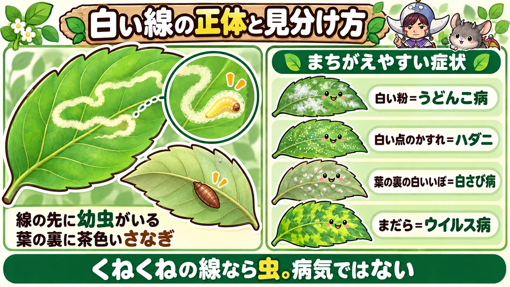
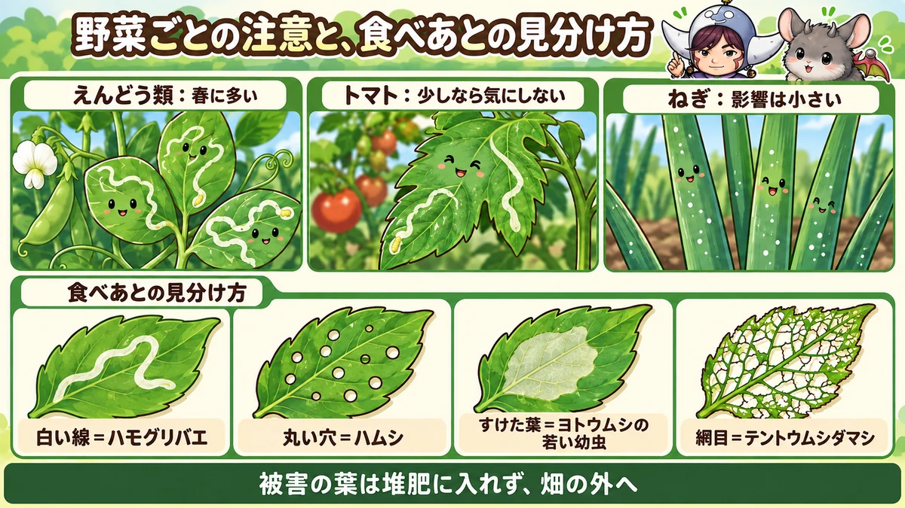

Leaf miners 🐛 What the white lines mean and what to do
🐛 "My snap pea leaves are covered in winding white lines."
🐛 "The tomato leaves look as if someone has drawn a map on them."
🐛 "Is this a disease? Should I spray something?"
Hello, I'm Eiko. Eight years of growing vegetables organically and without pesticides, and a teaching licence in science.
Those white, winding lines are usually made by a tiny fly's larva eating inside the leaf. Because the trail looks like a little drawing, leaf miners are sometimes called drawing insects. They are not a disease, and a few lines are usually harmless. This guide covers how to recognise them, which crops and seasons are most affected, when to intervene, and how to use hand treatment, insect mesh and yellow sticky sheets.
Where you are: the crop names and seasons here are based on a central-Japan home garden. Leaf-miner species differ from country to country, but the signs and the basic response are similar. Shift March–May and August–October to your own mild seasons.
The essentials: a winding white line with a thicker end usually contains the larva. Hold the leaf to the light and squash the larva from above. A few lines need no action; treat seedlings or leaves that are almost white. Use mesh from sowing or planting, a small number of yellow sticky sheets for monitoring, and keep affected leaves out of the garden.
① Leaf miners at a glance
- What they are: tiny flies about 2 mm long; the larva burrows into and eats the inside of a leaf
- Signs: a white line that winds across the leaf and becomes slightly thicker at its end
- Crops often affected: snap peas, garden peas, mange-tout, tomatoes, cucumbers, watermelons, French beans, Chinese cabbage, spinach, spring onions and lettuce
- When they appear: spring to early summer (especially peas from late March to May in central Japan), and autumn (August–October)
- How much to worry: a few lines are usually fine; treat young seedlings or leaves covered in trails
- Treatment: squash the larva through the leaf and remove badly affected leaves
- Prevention: insect mesh, yellow sticky sheets and tidy weeds around the crop

What this diagram says （図解の文字）
- The white lines: what they are and how to tell them
- "There is a larva at the end of the line" ／ "A brown pupa is on the underside of the leaf"
- "White powder = powdery mildew" ／ "White speckled scarring = spider mites"
- "White bumps on the underside = white rust" ／ "Mottled = virus"
- "Wiggly lines mean an insect. It is not a disease"
② How to observe before deciding
1. Look at the shape of the white area
Is it a line, a dot, a powder or a mottled patch? A line suggests a leaf miner, fine dots suggest spider mites, powder suggests powdery mildew, and mottling raises the possibility of a virus.
2. Rub it with a finger
If powder comes off, it may be a fungus such as powdery mildew. If nothing comes off, the damage may be an insect or something inside the leaf.
3. Hold the leaf to the light
Against the sky, the larva inside the leaf and the empty, eaten tunnel become much easier to see.
4. Turn the leaf over
Spider mites, thrips, white-rust bumps and downy mildew often show on the underside, so always check both sides.
5. Magnify it
A hand lens or phone camera can reveal a tiny insect or larva that is impossible to identify with the naked eye. A photo also lets you compare the mark later.
③ Meet the leaf miner
What kind of insect is it?
A leaf miner is a very small fly, about 2 mm long. Adults are dark with yellow markings and walk or fly over leaves. The female makes a tiny wound in the surface and lays an egg inside.
The larva eats between the skins
After hatching, the larva slips between the upper and lower skins and eats the green tissue inside. The eaten area is empty and translucent, so a white line appears on the leaf. As the larva grows, the trail grows wider, and the larva is at its leading end.
Why people call it a drawing insect
The white trail looks like a doodle. Its curves show which way the larva travelled, and several trails on one leaf can look like a map.
Where it pupates
A mature larva may pupate inside the leaf or leave it and drop to the soil. Turn a leaf over and you may see small brown grains: the pupae. Adults emerge from them and lay eggs again.
When you see an adult
A tiny dark fly walking over leaves, or many pin-prick white marks where it has fed or laid eggs, means adults are present. White trails often start a few days later, so increase your rounds.
There are several kinds
Some species prefer beans, some onions and others tomatoes or aubergines. The crops they choose and the shape of the trail differ slightly. The onion type may leave white dots or short streaks instead of a long winding line.
The yearly cycle
In mild weather, egg, larva, pupa and adult follow one another quickly, producing several generations. Numbers rise in the gentle temperatures of spring, early summer and autumn, and fall in the hottest and coldest periods. Some overwinter as pupae in weeds or leftover leaves around the bed.
④ Recognising the trail
The line winds rather than running straight
A leaf-miner trail is characteristically white and curving. It begins narrow and becomes wider as the larva grows.
The larva is at the thick end
Hold the leaf to the sky. A tiny yellowish larva may be visible at the thickest end. Small black dots of droppings can remain along the tunnel.
How it differs from other marks
- Powdery mildew: white powder on the surface; it comes off on a finger
- Spider mites: many tiny white specks that look rubbed or bleached, not a line
- Thrips: pale, silvery scarring or streaks
- Leaf miner: a winding white line, with the larva at its end
If it looks as though a white line has been drawn on the leaf, think leaf miner.
⑤ Other causes of a pale leaf
White leaves are not always leaf miners. Disease, insects, weather and fertiliser can all change leaf colour, and each needs a different response.
A winding white line → leaf miner
There is a larva at the end. Squash it through the leaf and remove leaves with heavy damage.
A white powder → powdery mildew
A round patch of powder spreads over the surface, and it comes off on a finger. It is common on pumpkins, cucumbers and peas. Improve airflow and remove diseased leaves.
Fine white specks → spider mites
Many tiny specks make the surface look bleached. Look underneath for tiny red or yellow-green mites. They favour hot, dry weather and can make fine webbing. Wash the undersides with water.
Pale silvery scarring or streaks → thrips
On spring onions and onions, pale rubbed marks or streaks appear; narrow insects may hide in strawberry or aubergine flowers. Silver mulch or blue sticky sheets can reduce numbers.
White bumps underneath → white rust
Brassica leaves such as turnip, radish and komatsuna can develop raised white bumps underneath while the upper surface turns yellowish. It favours wet, dewy late autumn and early spring. Cover an affected leaf with a bag before removing it.
White to grey mould underneath → downy mildew
Yellowish patches form on onions, cucumbers and Chinese cabbage, with grey-to-white mould underneath in damp weather. Improve drainage and airflow.
Only the sunny side is pale → sunscald
A leaf or fruit surface exposed to strong sun turns pale or brown, while the shaded side does not. It is common after a seedling is suddenly put in bright sun.
Pale after a frosty morning → frost damage
After frost, tips and edges turn pale or translucent, then brown and die. Use fleece or another cover to protect them.
Mottled → virus
Dark and light green, yellow or pale patches appear and leaves may curl. Aphids and other insects can spread viruses, and there is no cure; remove affected plants early.
Pale after spraying → chemical damage
A mixture that was too strong can leave pale spots or scorch marks. Home-made liquids can damage leaves too. Dilute exactly as directed and do not spray repeatedly.
⑥ Identify insects from feeding marks
Winding white line → leaf miner
The insect eats inside the leaf, so the surface is not punctured.
Many small round holes → flea beetles and other leaf beetles
Cucumber beetles, striped flea beetles and related adults make small round holes, often on cucumbers, pumpkins, radishes and turnips.
A translucent window with only a thin skin left → young armyworm caterpillars
Young caterpillars eat from the underside and leave the upper skin like tracing paper. They often feed together, so search nearby leaf undersides and around the stem.
A fine mesh of feeding → leaf-eating ladybirds
On aubergines and potatoes, feeding can leave a net of fine horizontal stripes.
Large bites from the edge → larger caterpillars
Large green or brown caterpillars bite from the edge and leave large holes, with droppings nearby.
No feeding marks but curled leaves → aphids and sap suckers
Look underneath and at new shoots when young leaves curl or wrinkle without visible holes.
⑦ How much should you worry?
A few trails are usually harmless
Tomatoes and cucumbers have many leaves. A few trails on a few leaves normally make little difference to growth or harvest, and the fruit itself is not affected. There is no need to be anxious.
When treatment is worthwhile
- Several leaves are affected while the seedling is still small
- Trails are so dense that a leaf is almost white
- Lower leaves are starting to die, especially along the trails
Leaves are the plant's food factory. If trails remove too much green area, the plant makes less food. Treat seedlings and heavy outbreaks.
Do not spray just because it looks like a disease
Leaf miners are insects, not disease. Fungicide and disease home remedies do not work, and too much spray can damage and weaken the plant. Identify the mark first.

What this diagram says （図解の文字）
- Treatment and prevention
- "Hold it to the light and find the end of the line" ／ "Squash the larva from the top of the leaf"
- "Put badly affected leaves in a bag and take them out of the garden"
- "Put up mesh as soon as you sow or plant" ／ "Yellow sticky sheet" ／ "Do not leave mesh on once it warms up"
- "A few lines are fine. Treat seedlings and heavy outbreaks"
⑧ Treatment
1. Squash the larva through the leaf
The larva is at the thick end of the line. Press the end firmly between finger and thumb from the top of the leaf. It is so small that you may not see it squash, but firm pressure along the end is enough. If you see a brown pupa underneath, squash that too.
2. Remove badly affected leaves
Remove leaves that are almost white or dying along the trails. Larvae or pupae may still be inside, so put the leaves in a bag and take them out of the garden. Do not leave them on the soil.
3. Skip home-made liquids
Some gardeners spray oil and soap diluted in water, a mixture also used against aphids. Under Japan's pesticide rules, oil-and-soap spray isn't approved for pest control. Also, the larva is inside the leaf, so a liquid sprayed on the outside hardly reaches it. Make hand treatment, squashing and removing, the main method.
4. Keep checking
Adults lay eggs repeatedly, so new trails can appear after one treatment. Walk round once or twice a week and squash new larvae early.
⑨ Prevention
1. Insect mesh
Put mesh on immediately after sowing or planting to stop adults laying eggs. It is especially useful for autumn spinach and other leafy crops: cover them as soon as the seed is sown.
2. Do not leave mesh or fleece sealed when it warms up
A warm, still cover can become a comfortable place for leaf miners that got inside. Peas protected over winter may have more leaf miners inside the cover than outside. Once spring is warm, open the sides during the day or remove the cover so natural enemies can enter.
3. Yellow sticky sheets
Adult leaf miners are said to be attracted to yellow. Hang a sheet near the crop to catch some adults and to monitor whether they are present. Bees and other harmless insects can stick to it, so use only a few and only for a short time.
Check seedlings before buying
Some pot-grown plants already have trails or pupae. Inspect both sides of the leaves and choose clean plants.
4. Tidy weeds around the crop
Weeds near the bed can support leaf miners. Remove weeds close to the vegetables regularly.
5. Do not leave affected leaves in the bed
Adults can emerge from larvae and pupae in discarded leaves and lay eggs on the next crop. Bag affected leaves and take them outside the garden.
6. Look after natural enemies
Tiny parasitic wasps are said to lay eggs in leaf-miner larvae and kill them. Spraying broadly can kill these allies too, allowing leaf miners to increase. Rely mainly on hand work and make the garden a place where natural enemies can live.
⑩ Spring peas: care alongside leaf miners
Open the winter cover
Open or remove winter insect mesh and polythene during the day once the weather warms. This releases humidity and lets in the natural enemies of leaf miners and aphids.
Keep the base open
Remove weeds, dead leaves and spent flowers from around the stems. Trapped humidity also encourages powdery mildew.
Harvest often
Pick pods before they become oversized. This reduces strain and extends the harvest. As plants tire, leaf-miner trails and powdery mildew often become more noticeable.
Clear weak branches
Cut back weak branches that have finished fruiting and have no flowers beyond them. Better airflow lets the remaining branches receive more of the plant's resources.
Tell the trail from mildew
Spring peas can show leaf-miner lines and powdery mildew at the same time. Winding lines indicate the insect; powder that comes off on a finger indicates mildew.
⑪ Protecting autumn leafy crops
Start protection immediately
Cover leafy crops with insect mesh from sowing or planting. For spinach, fleece over the freshly sown row can help seedlings emerge evenly. Remove fleece when true leaves number two or three, then change to insect mesh; leaving fleece on can make seedlings damp, damaged or spindly.
Look inside the mesh
Aphids and other insects can still get in. Lift the edge occasionally and inspect leaf undersides.
⑫ Using yellow sticky sheets
- Hang them close to the crop's height on a stake
- Use only one or two per bed
- Every one or two weeks, check what and how many insects are stuck; increase leaf checks when adult leaf miners rise
- Replace them when dirty and no longer sticky
- Do not leave them out indefinitely: bees and helpful insects can be caught too
Think of a sticky sheet as a way to learn which insects are visiting, not as a tool for catching every insect.
⑬ A weekly inspection routine
- Once or twice a week, start with the lower leaves and work upwards
- When you find a white line, hold the leaf to the light and check for the larva at its end
- If there is a larva, press and squash it through the upper surface
- Turn the leaf over and squash any brown pupae
- Remove leaves full of trails or beginning to die and put them in a bag
- If you use a yellow sheet, count how many adult leaf miners are stuck
- Record when and on which crop it appeared; it will guide next year's checks
⑭ Crop by crop
Snap peas, garden peas and mange-tout
Leaf miners often start from late March and increase as it warms. By the end of the harvest, lower leaves may be full of lines. If harvest is nearly over, keep picking and do not worry. If it is early spring and the damage is heavy, squash larvae and remove badly affected leaves. Take off winter mesh or polythene once it warms.
Tomatoes
Trails may start from May. Tomatoes have many leaves, so a few lines are harmless. Remove heavily marked leaves as you pinch side shoots and clear lower leaves.
Cucumbers and watermelons
White lines and odd scars can appear from summer into autumn. They are easy to confuse with disease, so identify the mark first. A small amount can be left alone.
Beans
Summer-sown beans may also have trails. They rarely affect the pods, so leave them if the amount is small.
Chinese cabbage, spinach and other leafy crops
Because the leaves themselves are eaten, trails are more noticeable. Cover immediately after sowing or planting. A few trails on an outer Chinese-cabbage leaf usually have little effect.
Lettuce and cabbage
Outer leaves can show trails too. They are often not eaten and have little effect on growth, so a few are fine. If the edible part is affected, remove that part.
Spring onions and onions
Look for white dots or short streaks. In spring onions a little damage is said to have only a small effect. In recent years, however, a type that puts many larvae into a single leaf and turns the whole leaf white has been found in many areas. Remove leaves with many white streaks and protect the crop with insect mesh.

What this diagram says （図解の文字）
- Crop cautions and reading feeding marks
- "Peas: common in spring" ／ "Tomato: a few lines are fine" ／ "Spring onion: little impact"
- "White line = leaf miner" ／ "Round holes = leaf beetle"
- "Translucent leaf = a young armyworm caterpillar" ／ "Mesh pattern = leaf-eating ladybird"
- "Do not put affected leaves in compost; take them outside the garden"
⑮ Checking spring onions
Several problems can make spring-onion leaves look pale, not just leaf miners.
- White dots or short streaks: leaf miner; impact is small, so keep growing
- Pale rubbed marks and slender insects: thrips
- Raised orange dots: rust; cut affected leaves inside a bag
- A cluster of tiny black insects: onion aphids; remove them early
Check for these symptoms all at once when you earth up the onions.
⑯ Making a garden that limits damage
Do not overfeed
Too much fertiliser, especially nitrogen, makes soft, lush leaves that attract leaf miners and aphids. Follow the amounts for both base and side dressing.
Tidy thoroughly
Spent plants and affected leaves left in the bed allow larvae and pupae to develop and move to the next crop. Take leaves out of the garden when clearing up.
Keep weeds away from vegetables
Weeds right beside crops can shelter leaf miners. Pull weeds around the bed and keep the wider margin short.
Make room for natural enemies
When hand work is the main method rather than broad spraying, parasitic wasps and other natural enemies are more likely to stay.
⑰ Containers and balconies
Leaf miners can appear on peas, tomatoes and leafy crops in balcony pots too. With fewer plants and daily access, squash a larva as soon as you find a line. Hang one yellow sheet nearby to monitor adults. When bringing pots outdoors from indoors or a sheltered spot, inspect both sides of the leaves for trails and pupae first.
⑱ What to do through the season (central Japan)
- February–March: open winter mesh or polythene on warm days; start checking pea leaves
- March–May: pea trails increase; squash larvae and remove heavily affected leaves; tomatoes begin to show them too
- June–August: watch cucumbers, watermelons, tomatoes and beans; a small amount is fine
- August–October: cover autumn leafy crops with mesh from sowing; inspect outer Chinese-cabbage leaves
- Clearing up: bag affected leaves and take them outside the garden
⑲ Where advice differs
Can affected leaves go in compost?
Larvae and pupae may survive in a home compost heap and adults may emerge. Some say a properly hot heap kills them, but household heaps often do not heat all the way through. For heavily affected leaves, a bag outside the garden is safer.
Should I ignore it or treat it?
Both common claims have a place. A mature plant with a few trails usually needs no action; a seedling, a leafy crop or a plant with leaves almost covered in trails does. Judge the amount and the plant's strength.
Can I use oil and soap liquid?
Under Japan's pesticide rules, oil-and-soap spray isn't approved for pest control. Also, a liquid sprayed on the outside hardly reaches a larva inside a leaf. Keep hand work, squashing and removing, central, and prevent new damage with insect mesh and yellow sticky sheets.
Should affected leaves come off?
Removing a leaf also removes the larva or pupa and can reduce the next generation. Removing too much foliage reduces the plant's food-making ability. Leave lightly marked leaves; remove only leaves full of trails or starting to die.
⑳ Common mistakes
Spraying fungicide because the white line looks like disease
Leaf miners are insects, so fungicide cannot help. Check the thick end of the line.
Spraying home-made liquid again and again
Large amounts can injure the plant. Identify first, then use hand treatment.
Leaving yellow sticky sheets out for ever
Helpful insects can be caught too. Use few sheets for a short period.
Throwing affected leaves onto the bed
Larvae and pupae can mature there. Bag the leaves and take them out.
Leaving fleece on after seedlings emerge
They can become damp and spindly. Remove it at two or three true leaves and change to mesh.
Removing every leaf with a line
A few lines do not justify stripping the plant. Remove only heavily marked or dying leaves.
Keeping the mesh on until spring
Leaf miners can multiply inside. Open it when the weather warms.
㉑ Questions
How fine should insect mesh be?
Adults are very small, so finer mesh blocks them better. Fine mesh also reduces airflow and makes summer heat worse. Choose for the crop and season, and bury or seal the edge so there are no gaps.
Can I eat a leaf with a white line?
Yes. On a leafy crop, remove the part that bothers you before using it.
I pressed the end but found no larva
It may have matured and left the leaf. Look for a brown pupa underneath or on nearby leaves. A trail that stops at the edge or has a tiny exit hole may be empty.
Will the plant reach harvest?
Usually yes. Fruit crops such as tomatoes, cucumbers and peas tolerate a few trails. If leaves become almost white, squash larvae and remove the worst leaves because yield may fall.
Can children observe them?
Holding a leaf to the light to find the tiny larva, or using a hand lens to look for a pupa underneath, is a good observation. The trail widening shows how the larva grows.
Do they appear in winter?
Numbers fall in cold weather, but a warm polythene tunnel or a pot brought indoors can still support them. Inspect covered leafy crops occasionally.
Will they move to other vegetables?
Some species prefer beans or onions, while others use several vegetables. They can appear on another crop in the same garden, so keep checking the whole plot.
Do they bite people?
No. They are tiny flies and do not sting or bite people.
Squashing a larva sounds unpleasant
The larva is inside the leaf; you only press the line from above. There is no need to touch it directly.
Peas get them heavily every year
Check whether winter mesh or polythene stayed on too long. Tidy weeds, remove affected leaves from the garden, and increase spring rounds so you squash trails early.
Can I reduce them without pesticides?
Yes. Combine squashing larvae, removing the worst leaves, mesh at sowing, a small yellow sheet for adults and weed management. This is usually enough for a home garden.
Can containers get them?
Yes, but fewer plants make inspection easy. Squash the larva as soon as you see a trail.
🔬 The science: an insect living inside a leaf
Why eat inside the leaf? Between the upper and lower skins is shelter from rain, wind and sun, and it is harder for birds or predators walking on the leaf to find the larva. A surface spray also has difficulty reaching it.
Why does the trail look white? Green comes from chlorophyll in the cells inside the leaf. Once the larva eats those cells, only thin skins remain. The empty space lets light through, so it looks white. The larva's route stays visible as a line.
Why are parasitic wasps allies? Tiny wasps are said to find larvae inside leaves and lay an egg through the leaf. The wasp larva eats the leaf miner, then becomes an adult and searches for another. A garden with these enemies is less likely to have an outbreak.
Why yellow? Many small insects that lay eggs on leaves are said to be drawn to yellow-green colours, perhaps because they resemble young, soft leaves. Yellow sticky sheets use that attraction.
Why does the line get wider? A newly hatched larva eats little, so the trail is thin. As its body grows, it eats more and the trail widens. That is why the larva is at the thickest end.
To sum up
- ✅ A winding white line is usually a leaf-miner larva eating inside the leaf, not a disease
- ✅ The thick end contains the larva; hold the leaf to the light to find it
- ✅ A few trails are harmless; treat seedlings, leafy crops and leaves that are almost white
- ✅ Squash the larva through the leaf and bag badly affected leaves outside the garden
- ✅ Prevent eggs with mesh from sowing or planting, use a few yellow sticky sheets, and tidy nearby weeds
- ✅ Open mesh or polythene when it warms so natural enemies can enter
- ✅ Fungicide and disease liquids do not work; too much spray can weaken the plant
- ✅ Tell lines, dots, powder and mottling apart, and use feeding marks to identify other insects
Thank you for reading all the way to the end! The next time a white line appears, hold the leaf up to the light before you reach for a spray — you may find a tiny larva at the end of the map 🔍
Thank you for reading!